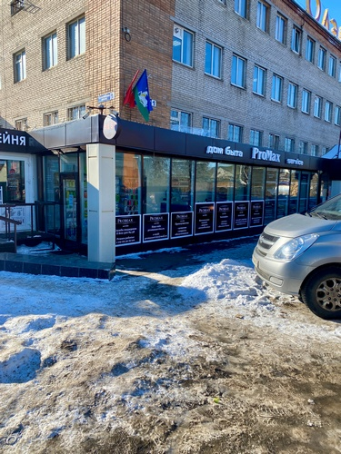
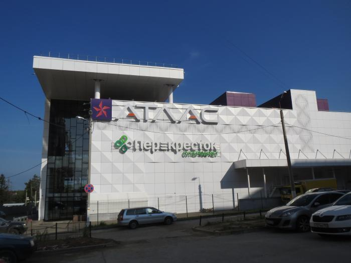

Главная
Сервисный центр
Ремонт Apple
Ремонт мобильных и планшетов
Ремонт компьютеров и ноутбуков
Дом быта
Часовая мастерская
Обувная мастерская
Фотосалон
Изготовление ключей
Полезное
Контакты
Вы можете найти нас по следующим адресам, а также связаться с нами по бесплатному номеру телефона:
8 800 300 84 38

